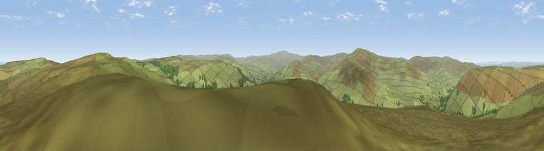

Viewpoint near Slaggyford
#7008 in England · top 17% of its area beats it · near SlaggyfordWhere it is
The exact computed spot (NY 71175 50525). Click the marker for map links.
The view, rendered

A 360° render of this exact spot computed from the terrain model, tree cover and land cover — summer colours, afternoon light, calibrated against photographs of famous viewpoints. Real trees, hedges and buildings will differ in detail.
The panorama
Grey silhouette: terrain skyline in each direction (720 bearings, Earth curvature and refraction included). Dashed green: skyline with trees (+15 m) and buildings (+8 m) as obstacles. Blue strip: how far the ground is visible on each bearing.
Where the view opens
Wedge length = distance to the farthest visible ground on that bearing (vegetation-aware). Rings at 10, 25 and 50 km.
What fills the view
97% grassland · 3% woodland
Angular shares of the visible panorama (visual magnitude), not map area. Landscape diversity 0.07 (0–1 Shannon).
Key numbers
More beautiful places nearby
The staircase of upgrades: each row has a higher view potential than everything closer. Driving times are estimates from straight-line distance, calibrated against real road routing — check an actual route before setting out.
| Place | Direction | Drive | Score |
|---|---|---|---|
| Viewpoint near Slaggyford | NNE · 4 km | ~9 min | 70.0 |
| Grey Nag | WSW · 6 km | ~12 min | 75.7 |
| Viewpoint near Renwick | SW · 9 km | ~18 min | 77.0 |
| Viewpoint near Cumrew | W · 13 km | ~23 min | 77.2 |
| Viewpoint near Melmerby | SSW · 14 km | ~25 min | 78.1 |
| Viewpoint near Cumrew | W · 15 km | ~27 min | 78.8 |
| Barrock Fell | W · 25 km | ~40 min | 81.1 |
| Viewpoint near Watermillock | SW · 39 km | ~58 min | 82.6 |
54.84869, -2.45044 · source: screening · position refined by local search. Computed location — check access rights before visiting.